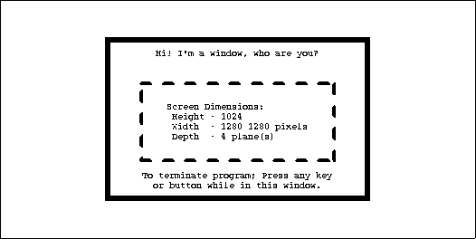
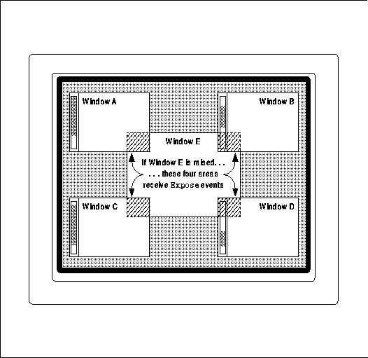

Xlib Programming Manual (O'Reilly & Associates, Inc.) |
This chapter presents a simple program that demonstrates the fundamentals of programming with the X library. All clients will use the techniques described and demonstrated here.
The basic program presented in this chapter fulfills all the requirements for a basic application outlined near the end of Chapter 2, "X Concepts," and illustrates some of the most important X concepts and programming issues. You should have read Chapter 2, "X Concepts" before proceeding.
The program will perform these operations:
The program just displays a window with some text and graphics drawn into it. Figure 3-1 shows the output of the program. The one useful thing it does is tell you the size and depth of the current screen.
Output of the basicwin program

Without further ado, let's begin to look at the
code.
In the following sections, the code is shown and described in small pieces. In some cases, the relevant declarations of variables are shown again in each segment of the code as well as at the top of the program (where they would normally appear). This has been done to increase clarity when showing the individual pieces of the program.
basicwin -- include files and declarations
/* Xlib include files */
#include <X11/Xlib.h>
#include <X11/Xutil.h>
#include <X11/Xos.h>
#include <X11/Xatom.h>
/* Standard C include file */
#include <stdio.h>
/* Bitmap data for icon */
#include "bitmaps/icon_bitmap"
#define BITMAPDEPTH 1
/* Values for window_size in main -- is window big enough to be
* useful? */
#define TOO_SMALL 0
#define BIG_ENOUGH 1
/* Display and screen_num are used as arguments to nearly every
* Xlib routine, so it simplifies routine calls to declare them
* global; if there were additional source files, these variables
* would be declared "extern" in them */
Display *display;
int screen_num;
/* Name this program was invoked by; this is global because
* it is used in several places in application routines, not
* just in main */
static char *progname;
void main(argc, argv)
int argc;
char **argv;
{
Window win;
unsigned int width, height; /* Window size */
int x = 0, y = 0; /* Window position */
unsigned int border_width = 4; /* Border four pixels wide */
unsigned int display_width, display_height;
char *window_name = "Basic Window Program";
char *icon_name = "basicwin";
Pixmap icon_pixmap;
XSizeHints *size_hints; /* Preferred sizes for window man */
XEvent report; /* Structure for event information */
GC gc; /* ID of graphics context */
XFontStruct *font_info; /* Structure containing
* font information */
char *display_name = NULL; /* Server to connect to */
Let's begin with the include files. The three include files
<X11/Xlib.h>, <X11/Xutil.h>, and <X11/Xos.h>
are needed in virtually all Xlib programs. The <X11/Xlib.h> file
contains declarations of structure types used in Xlib functions. <X11/Xlib.h>
in turn includes <X11/X.h>, which sets up many defined constants.
<X11/Xutil.h> contains more structure definitions and defined
constants for certain groups of Xlib functions. Many of the structures
and constant definitions from these include files are described in this
manual with the functions in which they are used. Structures and constants
are also presented on many of the reference pages in Volume Two, Xlib
Reference Manual, if the routine on that page uses a structure or defined
constant as an argument or return value. Appendix , Structure Reference,
of Volume Two, Xlib Reference Manual, provides an alphabetical listing
of structures; Appendix G, Symbol Reference, of Volume Two, Xlib
Reference Manual, provides the definitions of constants.
The final include file referenced in the Example 3-1 is <X11/Xos.h>, which attempts to make programs as portable as possible by including certain files depending on the operating system for which the program is being compiled. This include file is not standard and is not absolutely necessary, but it is useful.
Now let's move on to all the strange new types that appear in Example 3-1. The Window, Display, Pixmap, XSizeHints, and XEvent types used in this program are all defined in <X11/Xlib.h>. A brief description of each is given here, but you will need to see the code that uses each variable to fully understand them.
basicwin -- connecting to the server
char *display_name = NULL;
Display *display;
int screen_num;
Screen *screen_ptr;
.
.
.
progname = argv[0];
/* Connect to X server */
if ( (display=XOpenDisplay(display_name)) == NULL )
{
(void) fprintf( stderr, "%s: cannot connect to X server %s\n",
progname, XDisplayName(display_name));
exit( -1 );
}
screen_num = DefaultScreen(display);
screen_ptr = DefaultScreenOfDisplay(display);
The display_name argument to XOpenDisplay() specifies
which server to connect to. This may be any server on the network and could
be specified on the command line in a more complete application than this
one. (See Section 2.6.2.1, "Resources and User Customizability" and Chapter
13, "Managing User Preferences," for a discussion of how to process command
line arguments and user-specified default values in an X program.) When
display_name is not specified by the user, it should be set to NULL,
which causes XOpenDisplay() to connect to the server specified in
the UNIX environment DISPLAY variable. You can view the current contents
of the DISPLAY environment variable by using the UNIX command:
It can be changed by typing:echo $DISPLAY
or:setenv DISPLAY display_name(C Shell)
You must be careful to set the DISPLAY variable when you login to a remote machine to make sure that when you execute X applications from that terminal, your output will be displayed on the screen from which you typed the command.DISPLAY=display_name; export DISPLAY (Bourne Shell)
Both the DISPLAY environment variable and the display_name argument to XOpenDisplay() have the same format. The format is host:server.screen, in which host refers to the name of the machine running the server; server, the server number on that machine; and screen, the screen number on that server.
The server number can be thought of as the number of the user on a particular host. The server number is always zero on a single-user workstation and may be nonzero only if a single host has a separate keyboard, pointer, and display for more than one user, all connected by wires (not networks) to the central host. Systems that run multiple X servers are rare.
The .screen part is optional and only specifies which screen is returned by the DefaultScreen() macro (more on macros in a minute). You can still use any or all of the screens controlled by the specified server. For example, Perseus:0.1 instructs the server you are running the program on to connect to server 0 on the host called Perseus and that the default screen on that server for this program will be screen 1.
The XOpenDisplay() routine returns a pointer to a structure of type Display. If the connection is successful, the structure will be filled with information about the server and each of its screens. If the attempt to create a connection fails, XOpenDisplay() returns NULL. The code in Example 3-2 above checks to make sure this returned pointer is not NULL before proceeding. The message printed when the connection fails includes the text returned by the XDisplayName() function. This function returns display_name or, if that is NULL, the UNIX environment DISPLAY variable. XDisplayName() is necessary, since without it, there would be no way to tell the user to what server an attempt to connect was made.
The client might not succeed in connecting to a server for a number of reasons. Most likely, the display_name variable or DISPLAY environment variable does not specify a valid server that is connected via the network to the machine on which you are running the program. Or perhaps the network is out of order. Another possibility is that the server and client use different versions of the X protocol. X Version 11 programs are not compatible with X Version 10 and vice versa, so that if such a connection is attempted, an error message such as "protocol mismatch" should be printed, since the connection will partially succeed. All releases of X Version 11, however, are compatible since they use the same protocol.
The connection will also fail if the host you are running the client on is not on the host access list of the server you are trying to display on. The host access list is a simple permission mechanism. A server reads the list of hosts as it starts up and may be connected only to clients running on these hosts. There are commands to add and remove hosts from the access list, but these can be called only from clients running on the host whose list is being changed. In all these cases, the code shown in Example 3-2 will simply print the name of the server to which the connection failed and no further information.
In R4, a simple authorization scheme has also been implemented. If the person operating the server has turned authorization on, Xlib must know a secret code in order to connect to that server. Xlib gets this code from a file, and the server puts it there to grant access.
If Example 3-2 executes successfully past opening the display, we can begin to set up variables for use in the rest of the program. The first of these is the global variable screen_num, set to the return value of the DefaultScreen() macro. screen_num will be used throughout the program to indicate which screen on the server our operations are to affect. It is important to use the DefaultScreen() macro rather than to hardcode 0 as the screen used by the client, because even without command line parsing in the client, this allows the user to set the default screen by setting the .screen element of the DISPLAY environment variable.
The variable screen_num can actually be any integral value between 0 and the value returned by (ScreenCount)(display) - 1), inclusive. The ScreenCount) macro returns the number of screens on the connected server. Since we only intend to use one of the screens, we can be satisfied with using the default screen.
The macros are provided both for convenience and because the Display structure is intended to be opaque; clients should not access its members directly. The reason for it being opaque is that Xlib's authors want to retain the option to change the members in the Display structure without making existing clients obsolete.
To get the dimensions of a screen in pixels, you can use the macros DisplayWidth() and DisplayHeight(). The macros DisplayWidthMM() and DisplayHeightMM() return the screen dimensions in millimeters. These four macros get their information locally from the Display structure, so they are fast and efficient. The ratio of width in millimeters to width in pixels gives you a measurement of the spacing between pixels horizontally, and the same process can be used to determine the vertical pixel spacing. This can be important because when you draw a circle, it will look more like an ellipse on screens that do not have the same pixel spacing in both directions (usually inexpensive PC servers). You can tailor your drawing to compensate for this effect.
The second and third ways to get the geometry of a window are to use XGetGeometry() or to get all the window attributes using XGetWindowAttributes(). The difference between these two routines is that XGetWindowAttributes() gets much more information and actually calls XGetGeometry() itself. These methods have the disadvantage that they get information from the server, requiring a round-trip request that is subject to network delays. We show this method here because, for any window other than the root window, this is the only way to get window information.
The following code fragments demonstrate the three ways of getting root window information. basicwin uses the macros method because, in this case, we need information about the root window, and this is the most efficient way to get it.
Example 3-3 shows the macros method; Example 3-4, the XGetGeometry() method; and Example 3-5, the XGetWindowAttributes() method.
Code fragment for getting display dimensions -- using macros
Another way to get window size -- using XGetGeometry()Display *display; int screen_num; unsigned int display_width, display_height; . . /* Open display */ screen_num = DefaultScreen(display); . . /* Display size is a member of display structure */ display_width = DisplayWidth(display, screen_num); display_height = DisplayHeight(display, screen_num);
Display *display;
int screen_num;
Window root;
int x, y;
unsigned int width, height;
unsigned int border_width;
unsigned int depth;
.
.
/* Open display */
.
.
/* Get geometry information about root window */
if (XGetGeometry(display, RootWindow(display, screen_num), &root,
&x, &y, &width, &height, &border_width, &depth) == False)
{
fprintf(stderr, "%s: can't get root window geometry\n",
progname);
exit(-1);
}
display_width = width;
display_height = height;
Note that the root argument of XGetGeometry()
returns the root window at the top of the hierarchy of the window being
queried. This happens to be useless in this case, because it is the root
window we are querying!
A third way to get window size -- using XGetWindowAttributes()
Display *display;
int screen_num;
XWindowAttributes windowattr; /* (This declaration at top) */
.
.
/* Open display */
screen_num = DefaultScreen(display);
.
.
/* Fill attribute structure with information about root window */
if (XGetWindowAttributes(display, RootWindow(display, screen_num),
&windowattr) == 0) {
fprintf(stderr, "%s: failed to get window attributes.\n",
progname);
exit(-1);
}
display_width = windowattr.width;
display_height = windowattr.height;
The basicwin application has only one window. Creating the first window of an application is a special case, because that window is a child of the root window and, therefore, is subject to management by the window manager. An application can suggest a position for this window, but it is very likely to be ignored. Most window managers allow the user to position the window as it appears on the screen. So most simple applications create the first window with its position set to (0,0). Example 3-6 shows the simplest call to create a window.
In Chapter 14, "A Complete Application," we will show you a more complete approach that processes command line arguments to get the position of the top-level window. When the user specifies a position, there is a technique for making sure that the window manager will honor the position.
basicwin -- creating a window
The only new thing in Example 3-6 is the use of several new macros in the call to create a window.Window win; int border_width = 4; /* Border four pixels wide */ unsigned int width, height; /* Window size */ int x,y; /* Window position */ . . /* Open display, determine screen dimensions */ screen_num = DefaultScreen(display); . /* Note that in a real application, x and y would default to 0 but * would be settable from the command line or resource database */ x = y = 0; /* Size window with enough room for text */ width = display_width/3, height = display_height/4; /* Create opaque window */ win = XCreateSimpleWindow(display, RootWindow(display, screen_num), x, y, width, height, border_width, BlackPixel(display, screen_num), WhitePixel(display, screen_num));
Let's talk about the RootWindow() macro. Each screen has its own root window. To create the first of your application's windows on a particular screen, you use the root window on that screen as the parent. That window can then only be used on that screen. The ID of the root window on a particular screen is returned by the RootWindow() macro. The first generation of windows on a screen (known as the top-level windows) should always use this macro to specify the parent. XCreateSimpleWindow() makes a new window given arguments for specifying it parent, size, position, border width, border pixel value, and background pixel value. All other attributes of the window are taken from the parent, in this case the root window. If we wanted to specify any or all the attributes instead of inheriting them from the parent, we would have to use XCreateWindow() instead of XCreateSimpleWindow().
This example is a monochrome application, but it will work on both monochrome and color screens. We use the WhitePixel() macro to specify the background pixel value (in the call to create the window) and set the foreground in the GC to be the contrasting value returned by BlackPixel(). The border pixel value is also set to BlackPixel(). The background and border pixel values are set with the last two arguments of XCreateSimpleWindow(). The foreground pixel value is set in the get_GC routine in the manner described in Section 5.1, "Creating and Setting a Graphics Context."
As you may recall from Chapter 2, "X Concepts," pixel values represent colors, but they will be translated by a colormap before being displayed on the screen. BlackPixel() and WhitePixel() return the pixel values corresponding to two contrasting colors in the default colormap, which might not actually be black and white.
Every application should be made to work in monochrome, because many people have only monochrome screens.
How to add color handling to basicwin (or any application) is described in Chapter 7, "Color."
The program should take two steps in creating the pixmap: it should find out what sizes of icon are acceptable to the window manager and then create a pixmap of an appropriate size. Since most current window managers do not specify icon sizes, and it is difficult to know how to respond in a reasonable way, this issue can be ignored for the present. Eventually, when standard window managers specify standard icon sizes, applications would use XGetIconSizes() to determine which window manager was in operation and have a icon bitmap for each one.
Example 3-7 shows the simple process of creating a pixmap for the icon.
basicwin -- creating an icon pixmap
#include "bitmaps/icon_bitmap"
void main(argc, argv)
int argc;
char **argv;
{
/* Other declarations */
.
.
.
Pixmap icon_pixmap;
/* Open display, create window, etc. */
/* Might someday want to use XGetIconSizes to get the icon
* sizes specified by the window manager in order to determine
* which of several icon bitmap files to use, but only when
* some standard window managers set these */
/* Create pixmap of depth 1 (bitmap) for icon */
icon_pixmap = XCreateBitmapFromData(display, win,
icon_bitmap_bits, icon_bitmap_width,
icon_bitmap_height);
.
.
.
An icon design can be created using the standard X application
bitmap. You run bitmap with a filename and dimensions as
command line arguments, like so:
Then you use the pointer to draw your bitmap. For more information on the bitmap editor, see Volume Three, X Window System User's Guide. Normally the icon carries some symbolic representation of the application, so use your imagination. bitmap creates an ASCII file that looks like Example 3-8. This particular bitmap is a bit small for an icon, being only 20 pixels on a side. A more typical size would be about 40 pixels on a side.% bitmap icon_bitmap 40x40
Format of bitmap files
#define icon_bitmap_width 20
#define icon_bitmap_height 20
static char icon_bitmap_bits[] = {
0x60, 0x00, 0x01, 0xb0, 0x00, 0x07, 0x0c, 0x03, 0x00, 0x04, 0x04, 0x00,
0xc2, 0x18, 0x00, 0x03, 0x30, 0x00, 0x01, 0x60, 0x00, 0xf1, 0xdf, 0x00,
0xc1, 0xf0, 0x01, 0x82, 0x01, 0x00, 0x02, 0x03, 0x00, 0x02, 0x0c, 0x00,
0x02, 0x38, 0x00, 0x04, 0x60, 0x00, 0x04, 0xe0, 0x00, 0x04, 0x38, 0x00,
0x84, 0x06, 0x00, 0x14, 0x14, 0x00, 0x0c, 0x34, 0x00, 0x00, 0x00, 0x00};
The bitmap format shown in Example 3-8 is not used only in
XCreateBitmapFromData(). It is also used by the Xlib functions XWriteBitmapFile()
and XReadBitmapFile(). An application can also read from a file
the data used to create a pixmap, instead of including the data, but this
is more complicated because it requires processing of filenames.
You may remember from Chapter 2, "X Concepts," that a property is a collection of information that is readable and writable by any client and is usually used to communicate between clients. The standard properties are part of the convention for communication between each application and the window manager.
You may also remember that a property is associated with a particular window. The standard properties are associated with the top-level window of the application. This is how the server keeps track of the standard properties of all the different applications and has them ready for the window manager to read them.
Several routines are provided that allow the application to easily set these properties; analogous routines allow the window manager to read them. The routine designed to set all the most important properties for a normal application is XSetWMProperties().
The document describing the standard for communication between the application and the window manager is called the Inter-Client Communication Conventions Manual; it is reprinted in Appendix L, Interclient Communcation Conventions, of Volume Zero, X Protocol Reference Manual. More information on the conventions can be found in Chapter 12, "Interclient Communication," of this manual.
The minimum set of properties that an application must set are:
basicwin -- setting standard properties
void main(argc, argv)
int argc;
char **argv;
{
XWMHints *wm_hints;
XClassHint *class_hints;
XTextProperty windowName, iconName;
.
.
.
/* To be displayed in window manager's titlebar of window */
char *window_name = "Basic Window Program";
/* To be displayed in icon */
char *icon_name = "basicwin";
Pixmap icon_pixmap;
XSizeHints *size_hints; /* Structure containing preferred sizes */
if (!(size_hints = XAllocSizeHints())) {
fprintf(stderr, "%s: failure allocating memory, progname);
exit(0);
}
if (!(wm_hints = XAllocWMHints())) {
fprintf(stderr, "%s: failure allocating memory, progname);
exit(0);
}
if (!(class_hints = XAllocClassHint())) {
fprintf(stderr, "%s: failure allocating memory, progname);
exit(0);
}
/* Open display, create window, create icon pixmap */
.
.
.
/* Before mapping, set size hints for window manager */
/* Note that in a real application, if size or position were
* set by the user, the flags would be USPosition and USSize,
* and these would override the window
* manager's preferences for this window. */
/* x, y, width, and height hints are taken from the
* actual settings of the window when mapped; note that
* PPosition and PSize must be specified anyway */
size_hints->flags = PPosition | PSize | PMinSize;
size_hints->min_width = 300;
size_hints->min_height = 200;
/* These calls store window_name and icon_name into
* XTextProperty structures and set their other fields
* properly */
if (XStringListToTextProperty(&window_name, 1, &windowName) == 0) {
(void) fprintf( stderr, "%s: structure allocation for \
windowName failed.\n", progname);
exit(-1);
}
if (XStringListToTextProperty(&icon_name, 1, &iconName) == 0) {
(void) fprintf( stderr, "%s: structure allocation for \
iconName failed.\n", progname);
exit(-1);
}
/* Whether application should be normal or iconified
* when first mapped */
wm_hints->initial_state = NormalState;
/* Does application need keyboard input? */
wm_hints->input = True;
wm_hints->icon_pixmap = icon_pixmap;
wm_hints->flags = StateHint | IconPixmapHint | InputHint;
/* These are used by the window manager to get information
* about this application from the resource database */
class_hints->res_name = progname;
class_hints->res_class = "Basicwin";
XSetWMProperties(display, win, &windowName, &iconName,
argv, argc, size_hints, wm_hints,
class_hints);
It is important to realize that these properties are only
hints. A hint is information that might or might not be used. There may
be no window manager running, or the window manager may ignore some or
all of the hints. Therefore, an application should not depend on anything
having been done with the information provided in the standard properties.
For example, take the window name hint. Some window managers will use this
information to display a titlebar above or beside each top-level window,
showing the application's name. The proper and obvious thing for the application
to do would be to set the window name to be the application's name. But
if the application were an editor, it could try to set its window name
to the name of the current file. This plan would fall through if no window
manager were running.
The icon name and icon pixmap should both set to allow the window manager to use either or both. Most current window managers often display just the icon pixmap, unless no pixmap is specified, in which case they use the icon name. If the icon name is not set, the convention within window managers is to use the window name as the icon name; if the window name is not specified either, then they will use the first element of the command line.
The UNIX shell command name and arguments are passed into main in the standard fashion from the command line, as argv and argc. These can be used directly as arguments in the call to set the standard properties. This information might be used by the session manager to restart or duplicate the application when so instructed by the user.
And last but not least, the window size hints property is a structure that specifies the sizes, positions, and aspect ratios preferred by the user or the program for this application. The XSizeHints structure is shown in Example 3-10.
The XSizeHints structure
typedef struct {
long flags; /* Marks defined fields
* in this structure */
int x, y; /* Obsolete as of R4 */
int width, height; /* Obsolete as of R4 */
int min_width, min_height;
int max_width, max_height;
int width_inc, height_inc;
struct {
int x; /* Numerator */
int y; /* Denominator */
} min_aspect, max_aspect;
int base_width, base_height; /* New in R4 */
int win_gravity; /* New in R4 */
} XSizeHints;
You might ask, "How would the user be involved in specifying
the size hints when they have to be set even before a window appears?"
The answer: applications can be written to let the user specify the position
and size of the top-level window through command line arguments or the
resource database. A more complete application would get these values,
use them to set the size of the window. To tell the window manager that
the user, not the application, supplied these values, the application would
set the flags field to USSize | USPosition instead of PSize
| PPosition.
All this arranges a priority for the different settings of the position and size of a top-level window. The lowest priority is the application itself. Next higher is the window manager, and highest of all is the user. In Example 3-9, the symbols used to set flags are PSize and PMinSize. These indicate that the program is specifying its desired size and its minimum useful size. The symbols used for other members of XSizeHints are shown on the reference page for XSetWMProperties() in Volume Two, Xlib Reference Manual.
Let's describe the other members of XSizeHints. The x, y, width, and height members are simply the desired position and size for the window. In R4 and later, these fields should not be set.
The rest of the size hints give the window manager information about how to resize the window. The min_height and min_width fields should be set to the minimum dimensions (in pixels) required so that the application can still function normally. Many window managers will not allow the user to resize the window smaller than min_width and min_height. max_width and max_height are analogous to min_width and min_height but are less critical for most applications.
In R4, the base_width and base_height fields have been added to the XSizeHints structure. They are used with the width_inc and height_inc fields to indicate to the window manager that it should resize the window in steps--in units of a certain number of pixels instead of single pixels. The window manager resizes the window to any multiple of width_inc in width and height_inc in height, but no smaller than min_width and min_height and no bigger than max_width and max_height. If you think about it, min_width and min_height and base_width and base_height have basically the same purpose. Therefore, base_width and base_height take priority over min_width and min_height, so only one of these pairs should be set.
The xterm application provides a good example of size increments. It wants its window to be resized in multiples of the font width and height, since it uses only constant-width fonts. This way, there are no partial characters along the edges of the window. What's more, the application can then interpret dimensions specified by the user in multiples of width_inc and height_inc, instead of pixels. The user specifies dimensions in characters (24 by 80 for a standard size terminal), which the application then translates into pixels by multiplying them by width_inc and height_inc. Most window managers display the dimensions of the window when the user is resizing it, and if width_inc and height_inc are set, they will use multiples instead of pixels as units.
In R4, the win_gravity field has also been added to the XSizeHints structure. This field suggests to the window manager how the window should be placed when mapped or, more accurately, how the position for the window specified by the user should be interpreted. Normally, when the user specifies a position, either by clicking a pointer button to position a window or through command line arguments, the window manager places the top-left corner of the application's top-level window at that point. The win_gravity field requests the window manager to place a different part of the window at that point. The values of this field are Center, East, North, NorthEast, NorthWest, South, SouthEast, SouthWest, and West. These refer to a corner or edge of the window that should be placed at the specified point. As mentioned, the default is NorthWest, which positions the top-left corner of the window at the specified point. Few applications need to use this feature.
The program must select these types of events specifically since, by default, it will not receive the kinds of input it needs. Example 3-11 shows the line of code that selects events.
basicwin -- selecting desired event types
The crucial argument of XSelectInput() is the event mask. Each symbol used here selects one of more event types. The event mask constants are combined with a bitwise OR since they are really setting bits in a single argument./* Select event types wanted */ XSelectInput(display, win, ExposureMask | KeyPressMask | ButtonPressMask | StructureNotifyMask);
ExposureMask selects Expose events, which occur when the window is first displayed and whenever it becomes visible after being obscured. Expose events signal that the application should redraw itself.
X provides separate events for depressing and releasing both keyboard keys and pointer buttons and separate symbols for selecting each of these types of events. KeyPressMask selects only KeyPress events, and ButtonPressMask selects only ButtonPress events. ButtonRelease and KeyRelease events can also be selected with ButtonReleaseMask and KeyReleaseMask, but they are not needed in this application.
StructureNotifyMask selects a number of event types, specifically CirculateNotify, ConfigureNotify, DestroyNotify, GravityNotify, MapNotify, ReparentNotify, and UnmapNotify. The only one of these we need for our application is ConfigureNotify, which informs the application of its window's new size when it has been resized. However, there is no way to select just this one event type. We could get away without selecting this event type, but any real application would use it because it allows an increase in performance. Without this event type, on every Expose event the application would have to use XGetGeometry() to find out its current size. This is a request that requires a reply from the server and therefore is subject to network delays.
The rest of the event types selected by StructureNotifyMask are described in Chapter 8, "Events."
XSelectInput() actually sets the event_mask attribute of the window. If you create the window with XCreateWindow() (as opposed to XCreateSimpleWindow()), you can select events at the same time by setting the event_mask attribute in the last two arguments of the call. This is slightly more efficient than calling XSelectInput() separately. You can also set this attribute through XChangeWindowAttributes() if, for some other reason, you need to call this function anyway.
In this program, we have already created two resources: a window and the icon pixmap. We still need to load a font for the text and to create a graphics context to draw both text and graphics into the window. These operations are done in the routines load_font and get_GC, called just before mapping the window. We are going to delay describing these routines until Chapters 5, The Graphics Context and 6, Drawing Graphics and Text, in order to keep this chapter to manageable proportions. However, the complete code for basicwin, including these functions, is listed at the end of this chapter, in case you want a sneak preview.
Example 3-12 shows the code that maps the window.
basicwin -- mapping the window
You may remember from Chapter 2, "X Concepts," that in order for a window to be visible, it must meet five conditions. These are so important that they bear repeating:/* Display window */ XMapWindow(display, win);
The XNextEvent() call performs the flushing frequently enough in applications that take user input. The routines that query the server should be called as infrequently as possible because they reduce performance over the network. The XFlush() command instructs the server to process all queued output requests right away. XFlush() is generally necessary only when an application needs to draw periodically even without user input.
The event loop is normally a closed loop, in which one of the event types with certain contents defined by the application indicates that the user wants to exit. In some existing applications such as xclock, the loop is completely closed, and therefore the only way to terminate the program is to find the process ID from the shell and kill it or use the window or session manager, but this can be inconvenient.
The choice of which events are received by the application was made earlier when the application selected input or set the event_mask attribute. The event loop must make sure to properly handle every event type selected. One of the most common debugging problems is for there to be a difference between the events handled and those selected.
Have a look at the code in Example 3-13, before we describe it in more specific terms.
basicwin -- processing events
.
.
.
/* Get events, use first Expose to display text and graphics
* ConfigureNotify to indicate a resize (maybe even before
* first Expose); ButtonPress or KeyPress to exit */
while (1) {
XNextEvent(display, &report);
switch (report.type) {
case Expose:
/* Unless this is the last contiguous expose,
* don't draw the window */
if (report.xexpose.count != 0)
break;
/* If window too small to use */
if (window_size == TOO_SMALL)
TooSmall(win, gc, font_info);
else {
/* Place text in window */
place_text(win, gc, font_info, width, height);
/* Place graphics in window */
place_graphics(win, gc, width, height);
}
break;
case ConfigureNotify:
/* Window has been resized; change width and height
* to send to place_text and place_graphics in
* next Expose */
width = report.xconfigure.width;
height = report.xconfigure.height;
if ((width < size_hints->min_width) ||
(height < size_hints->min_height))
window_size = TOO_SMALL;
else
window_size = BIG_ENOUGH;
break;
case ButtonPress:
/* Trickle down into KeyPress (no break) */
case KeyPress:
XUnloadFont(display, font_info->fid);
XFreeGC(display, gc);
XCloseDisplay(display);
exit(1);
default:
/* All events selected by StructureNotifyMask
* except ConfigureNotify are thrown away here,
* since nothing is done with them */
break;
} /* End switch */
} /* End while */
Example 3-13 is framed by an infinite while loop. Just inside
the top of the loop is the XNextEvent() statement, which gets an
event structure from the queue Xlib maintains for the application and puts
the pointer to it in the variable report. You might assume that
the event loop could have been written:
while (XNextEvent(display, &event)) {
.
.
.
}
but this is not the case. XNextEvent() returns void;
it only returns when there is an event to return. Errors are handled through
a separate error-handling mechanism, not through the returned value. So
it is necessary to write the event loop:
while (1) {
XNextEvent(display, &event);
.
.
.
}
Right after XNextEvent() is a switch statement that
branches depending on the event type. There is one case for each of the
four types of events: ButtonPress, ConfigureNotify, Expose,
and KeyPress.
The ConfigureNotify branch, in all applications, will calculate the values of variables based on the new window size. These variable values will then be used to calculate where to draw things in the Expose branch the next time an Expose event occurs. A ConfigureNotify event is always followed by one or more Expose events.
The code for Expose events draws or redraws the contents of the application's window. This code will be reached when the window is first mapped, and whenever a portion of the window becomes visible.
An application can respond to Expose events by refreshing only the parts of the window exposed, or by refreshing the entire window. The former is possible because the event structure for each Expose event carries the position and dimensions of a single rectangular exposed area, as shown in Example 3-14.
The XExposeEvent structure
typedef struct {
int type;
unsigned long serial;/* # of last request processed by server */
Bool send_event; /* True if this came from SendEvent request */
Display *display; /* Display the event was read from */
Window window;
int x, y;
int width, height;
int count; /* If nonzero, at least this many more */
} XExposeEvent;
Several Expose events can occur because of a single
window manager operation, as shown in Figure 3-2. If window E were
raised, four Expose events would be sent to it. The height
and width members in each event structure would correspond to the
dimensions of the area where each of the windows overlapped window E,
and the x and y members would specify the upper-left corner
of each area relative to the origin of window E. All the Expose
events generated by a single action are guaranteed to be contiguous in
the event queue.
Multiple Expose events generated from a single user action

Whether an application should draw the whole window or just the exposed parts depends on the complexity of the drawing in the window. If all of the window contents are simple for both the application and the server to draw, the entire window contents can be redrawn without a performance problem. This approach works well as long as the window is only redrawn once, even if multiple Expose events occur because of a single user action. One trick is to monitor the count member of the Expose event structure and ignore the Expose events (do not redraw the window) until this member is 0. It might seem an even better method to search the entire queue, removing all Expose events that occurred on the window, before redrawing. But this is illegal because there may be intervening ConfigureNotify events in the queue, and responding to an Expose event that follows a ConfigureNotify event too early will result in redrawing the wrong area or not redrawing at the right time. Only contiguousExpose events can be skipped.
On the other hand, if a window has any elements that can be time consuming for either the application or the server to redraw, then the application should only redraw the time-consuming elements if they are actually within the exposed areas.
The issue here is redrawing time, which has two components under the application's control: the time the application takes to process the redrawing instructions, and the time it takes for the server to actually do the redrawing. On most servers, a user must wait for the server to complete drawing before he or she can move the pointer or go on to other actions. Therefore, the time taken by the server is critical, since it translates directly into waiting by the user. Since the system running X clients is normally multitasking, the time taken by the application to minimize redrawing is not as important, since the user can still do work.
There are two approaches to assisting the server in redrawing exposed regions quickly. One is to avoid redrawing items in regions that have not been exposed. Doing this in an application requires identifying any items to be drawn that do not extend into any of the exposed areas and eliminating these drawing requests. There are a set of routines that perform intersecting calculations on regions that may help you implement this.
The second approach is to set the clip mask in the GC to draw only in the exposed areas. This second approach is much simpler in code, but it delegates the job of eliminating unnecessary drawing to the server. Many servers may not do this elimination, because there is again a tradeoff between the time saved in eliminating requests and the time spent in calculating which requests to eliminate.
If you are now confused and wondering which redrawing approach to take in your application, the general rules should be as follows:
The second method in the list above is not shown here because it is hard to demonstrate in a way that is transferable to other applications. We will just describe it in a little more detail instead. Let's say that we are writing a spreadsheet application and designing the exposure event handling. In the spreadsheet, it would be easy to determine which cells were affected by the exposure, because the cells are arranged along horizontal rows and in columns. Upon getting an Expose event, the application could easily determine which cells overlapped the exposed area and then redraw only those. The same could not be said of a painting program, in which some drawing primitives could be diagonal or drawn with weird line styles. It would be very hard to determine whether a particular primitive drawn in the painting program intersects with an exposed region. In general, any application that draws most or all of its graphics horizontally or vertically can benefit from this technique. One example of an application written this way is xterm, and you can look at the code for that if you can get it. xterm redraws only the characters that are in exposed areas.
Example 3-15 shows a technique that could be used for more complicated windows. It creates a single Region composed of the union of the rectangles in all the Expose events. Regions are described fully in Chapter 6, "Drawing Graphics and Text," but you should be able to understand this example anyway.
Handling Expose events for complex window contents
int window_size = BIG_ENOUGH; /* Or TOO_SMALL to display contents */
Region region; /* Coalesce rectangles from all Expose
* events */
XRectangle rectangle; /* Place Expose rectangles in here */
.
.
/* Create region for exposure event processing */
region = XCreateRegion();
while (1) {
XNextEvent(display, &report);
switch (report.type) {
case Expose:
if (window_size == TOO_SMALL) {
TooSmall(win, gc, font_info);
break;
}
/* Set rectangle to be exposed area */
rectangle.x = (short) report.xexpose.x;
rectangle.y = (short) report.xexpose.y;
rectangle.width = (unsigned short) report.xexpose.width;
rectangle.height = (unsigned short) report.xexpose.height;
/* Union this rect into a region */
XUnionRectWithRegion(&rectangle, region, region);
/* If this is the last contiguous expose in a group,
* set the clip region, clear region for next time
* and draw */
if (report.xexpose.count == 0) {
/* Set clip region */
XSetRegion(display, gc, region);
/* Clear region for next time */
XDestroyRegion(region);
region = XCreateRegion();
/* Place text in window */
place_text(win, gc, font_info, width, height);
/* Place graphics in window */
place_graphics(win, gc, width, height);
}
break;
Being able to redraw the contents of its windows is important
for most applications, but for a few applications, it might be very difficult
or impossible. There is another method that might be used in such a situation.
The application could draw into a pixmap and then copy the pixmap to the
window each time the window needs redrawing. That way the complete window
contents would always be available for redrawing the window on Expose
events. The disadvantage of this approach is that the server might not
have sufficient memory to store many pixmaps in memory (especially on color
displays) or it might be slow about copying the pixmap into the window.
But this would be a logical way to handle exposure in an application that
performs double-buffering. On high performance graphics workstations,
a feature known as a backing store might also be available to assist in
redrawing windows. When available, this feature can be turned on for any
window that really requires it. With the backing store on, the server can
maintain the contents of the window when it is obscured and even when it
is unmapped and capture drawing to the window while it is in one of these
states. The one situation that the backing store cannot fully take care
of is resizing the window. This is because it is assumed that most applications
need to recalculate the dimensions of their contents to fit a new window
size. The application can set an attribute called bit gravity to retain
part of the window during a resize, but part of the window is still going
to need redrawing if the window is resized larger.
In case you might be wondering, we have intentionally not described the draw_text and draw_graphics routines here. They are described in Sections 6.2.7 and 6.1.3. But if you are still curious, they are included in the listing of basicwin at the end of this chapter.
The reason involves a feature of X called substructure redirection, introduced in Section 2.1.5, "The Window Manager" and described more fully in Section 16.2, "Substructure Redirection."
What happens is that the requests (to create windows, to map windows, or to draw into them) are queued up in Xlib, waiting for something to happen that requires an immediate communication with the server. Xlib will not send requests of any kind to the server until such an occurrence. The requests are saved up as a packet so they can be sent over the network more efficiently.
The queue of requests waiting to be sent to the server is called the request buffer. The requests are accumulated in the request buffer until a call to:
But does it really take a lot of care to make sure that the request buffer gets flushed? Not usually. Since X programs are event-driven, they often call routines that get events. If an application handles event types that occur frequently, such as pointer or keyboard events, there is nothing to worry about. If the application needs to get information from the server by making a call containing the word Fetch, Get, or Query, no problem is likely. On the other hand, an output-only application that handles only Expose events would certainly need to call XFlush() once in a while to make sure that its drawing was honored in a timely fashion.
Example 3-16 shows the code that handles the ConfigureNotify event.
basicwin -- the ConfigureNotify event
Note that when the window is first mapped, the ConfigureNotify event appears on the queue before the first Expose event. This means that the code works even if the window manager modifies the window's size before allowing it to be displayed. The initial ConfigureNotify updates the application's knowledge of the window size, and the following Expose event allows the application to draw the window's contents.. . . case ConfigureNotify: /* Window has been resized; change width and height to * send to place_text and place_graphics in next Expose */ width = report.xconfigure.width; height = report.xconfigure.height; if ((width < size_hints->min_width) || (height < size_hints->min_height)) window_size = TOO_SMALL; else window_size = BIG_ENOUGH; break; . . .
If we had not selected ConfigureNotify events, the code for Expose would have to be modified to check the dimensions in the first Expose event, so that it knew the correct window size. It would also have to query the server for the window size in response to subsequent Expose events, because these events describe only the exposed area, not the entire window.
To cleanly exit, a client should free all the memory it has allocated, particularly X resources, and then close the display connection with XCloseDisplay(). Example 3-17 shows the code that performs these functions in basicwin.
Closing the display connection and freeing resources
It is good practice to use XCloseDisplay() even though the connection to the server is closed automatically when a process exits. Otherwise, pending errors might not be reported.case ButtonPress: /* Trickle down into KeyPress (no break) */ case KeyPress: XUnloadFont(display, font_info->fid); XFreeGC(display, gc); XCloseDisplay(display); exit(1);
basicwin -- in its entirety
#include <X11/Xlib.h>
#include <X11/Xutil.h>
#include <X11/Xos.h>
#include <X11/Xatom.h>
#include <stdio.h>
#include "bitmaps/icon_bitmap"
#define BITMAPDEPTH 1
#define TOO_SMALL 0
#define BIG_ENOUGH 1
/* These are used as arguments to nearly every Xlib routine, so it
* saves routine arguments to declare them global; if there were
* additional source files, they would be declared extern there */
Display *display;
int screen_num;
/* progname is the string by which this program was invoked; this
* is global because it is needed in most application functions */
static char *progname;
void main(argc, argv)
int argc;
char **argv;
{
Window win;
unsigned int width, height; /* Window size */
int x, y; /* Window position */
unsigned int border_width = 4; /* Four pixels */
unsigned int display_width, display_height;
unsigned int icon_width, icon_height;
char *window_name = "Basic Window Program";
char *icon_name = "basicwin";
Pixmap icon_pixmap;
XSizeHints *size_hints;
XIconSize *size_list;
XWMHints *wm_hints;
XClassHint *class_hints;
XTextProperty windowName, iconName;
int count;
XEvent report;
GC gc;
XFontStruct *font_info;
char *display_name = NULL;
int window_size = 0; /* BIG_ENOUGH or TOO_SMALL to
* display contents */
progname = argv[0];
if (!(size_hints = XAllocSizeHints())) {
fprintf(stderr, "%s: failure allocating memory, progname);
exit(0);
}
if (!(wm_hints = XAllocWMHints())) {
fprintf(stderr, "%s: failure allocating memory, progname);
exit(0);
}
if (!(class_hints = XAllocClassHint())) {
fprintf(stderr, "%s: failure allocating memory, progname);
exit(0);
}
/* Connect to X server */
if ( (display=XOpenDisplay(display_name)) == NULL )
{
(void) fprintf( stderr, "%s: cannot connect to X server %s\n",
progname, XDisplayName(display_name));
exit( -1 );
}
/* Get screen size from display structure macro */
screen_num = DefaultScreen(display);
display_width = DisplayWidth(display, screen_num);
display_height = DisplayHeight(display, screen_num);
/* Note that in a real application, x and y would default
* to 0 but would be settable from the command line or
* resource database */
x = y = 0;
/* Size window with enough room for text */
width = display_width/3, height = display_height/4;
/* Create opaque window */
win = XCreateSimpleWindow(display, RootWindow(display,screen_num),
x, y, width, height, border_width, BlackPixel(display,
screen_num), WhitePixel(display,screen_num));
/* Get available icon sizes from window manager */
if (XGetIconSizes(display, RootWindow(display,screen_num),
&size_list, &count) == 0)
(void) fprintf( stderr, "%s: Window manager didn't set \
icon sizes - using default.\n", progname);
else {
;
/* A real application would search through size_list
* here to find an acceptable icon size and then
* create a pixmap of that size; this requires that
* the application have data for several sizes of icons */
}
/* Create pixmap of depth 1 (bitmap) for icon */
icon_pixmap = XCreateBitmapFromData(display, win,
icon_bitmap_bits, icon_bitmap_width,
icon_bitmap_height);
/* Set size hints for window manager; the window manager
* may override these settings */
/* Note that in a real application, if size or position
* were set by the user, the flags would be USPosition
* and USSize and these would override the window manager's
* preferences for this window */
/* x, y, width, and height hints are now taken from
* the actual settings of the window when mapped; note
* that PPosition and PSize must be specified anyway */
size_hints->flags = PPosition | PSize | PMinSize;
size_hints->min_width = 300;
size_hints->min_height = 200;
/* These calls store window_name and icon_name into
* XTextProperty structures and set their other fields
* properly */
if (XStringListToTextProperty(&window_name, 1, &windowName) == 0) {
(void) fprintf( stderr, "%s: structure allocation for \
windowName failed.\n", progname);
exit(-1);
}
if (XStringListToTextProperty(&icon_name, 1, &iconName) == 0) {
(void) fprintf( stderr, "%s: structure allocation for \
iconName failed.\n", progname);
exit(-1);
}
wm_hints->initial_state = NormalState;
wm_hints->input = True;
wm_hints->icon_pixmap = icon_pixmap;
wm_hints->flags = StateHint | IconPixmapHint | InputHint;
class_hints->res_name = progname;
class_hints->res_class = "Basicwin";
XSetWMProperties(display, win, &windowName, &iconName,
argv, argc, size_hints, wm_hints,
class_hints);
}
/* Select event types wanted */
XSelectInput(display, win, ExposureMask | KeyPressMask |
ButtonPressMask | StructureNotifyMask);
load_font(&font_info);
/* Create GC for text and drawing */
getGC(win, &gc, font_info);
/* Display window */
XMapWindow(display, win);
/* Get events, use first to display text and graphics */
while (1) {
XNextEvent(display, &report);
switch (report.type) {
case Expose:
/* Unless this is the last contiguous expose,
* don't draw the window */
if (report.xexpose.count != 0)
break;
/* If window too small to use */
if (window_size == TOO_SMALL)
TooSmall(win, gc, font_info);
else {
/* Place text in window */
place_text(win, gc, font_info, width, height);
/* Place graphics in window */
place_graphics(win, gc, width, height);
}
break;
case ConfigureNotify:
/* Window has been resized; change width
* and height to send to place_text and
* place_graphics in next Expose */
width = report.xconfigure.width;
height = report.xconfigure.height;
if ((width < size_hints->min_width) ||
(height < size_hints->min_height))
window_size = TOO_SMALL;
else
window_size = BIG_ENOUGH;
break;
case ButtonPress:
/* Trickle down into KeyPress (no break) */
case KeyPress:
XUnloadFont(display, font_info->fid);
XFreeGC(display, gc);
XCloseDisplay(display);
exit(1);
default:
/* All events selected by StructureNotifyMask
* except ConfigureNotify are thrown away here,
* since nothing is done with them */
break;
} /* End switch */
} /* End while */
}
getGC(win, gc, font_info)
Window win;
GC *gc;
XFontStruct *font_info;
{
unsigned long valuemask = 0; /* Ignore XGCvalues and
* use defaults */
XGCValues values;
unsigned int line_width = 6;
int line_style = LineOnOffDash;
int cap_style = CapRound;
int join_style = JoinRound;
int dash_offset = 0;
static char dash_list[] = {12, 24};
int list_length = 2;
/* Create default Graphics Context */
*gc = XCreateGC(display, win, valuemask, &values);
/* Specify font */
XSetFont(display, *gc, font_info->fid);
/* Specify black foreground since default window background
* is white and default foreground is undefined */
XSetForeground(display, *gc, BlackPixel(display,screen_num));
/* Set line attributes */
XSetLineAttributes(display, *gc, line_width, line_style,
cap_style, join_style);
/* Set dashes */
XSetDashes(display, *gc, dash_offset, dash_list, list_length);
}
load_font(font_info)
XFontStruct **font_info;
{
char *fontname = "9x15";
/* Load font and get font information structure */
if ((*font_info = XLoadQueryFont(display,fontname)) == NULL)
{
(void) fprintf( stderr, "%s: Cannot open 9x15 font\n",
progname);
exit( -1 );
}
}
place_text(win, gc, font_info, win_width, win_height)
Window win;
GC gc;
XFontStruct *font_info;
unsigned int win_width, win_height;
{
char *string1 = "Hi! I'm a window, who are you?";
char *string2 = "To terminate program; Press any key";
char *string3 = "or button while in this window.";
char *string4 = "Screen Dimensions:";
int len1, len2, len3, len4;
int width1, width2, width3;
char cd_height[50], cd_width[50], cd_depth[50];
int font_height;
int initial_y_offset, x_offset;
/* Need length for both XTextWidth and XDrawString */
len1 = strlen(string1);
len2 = strlen(string2);
len3 = strlen(string3);
/* Get string widths for centering */
width1 = XTextWidth(font_info, string1, len1);
width2 = XTextWidth(font_info, string2, len2);
width3 = XTextWidth(font_info, string3, len3);
font_height = font_info->ascent + font_info->descent;
/* Output text, centered on each line */
XDrawString(display, win, gc, (win_width - width1)/2,
font_height,
string1, len1);
XDrawString(display, win, gc, (win_width - width2)/2,
(int)(win_height - (2 * font_height)),
string2, len2);
XDrawString(display, win, gc, (win_width - width3)/2,
(int)(win_height - font_height),
string3, len3);
/* Copy numbers into string variables */
(void) sprintf(cd_height, " Height - %d pixels",
DisplayHeight(display,screen_num));
(void) sprintf(cd_width, " Width - %d pixels",
DisplayWidth(display,screen_num));
(void) sprintf(cd_depth, " Depth - %d plane(s)",
DefaultDepth(display, screen_num));
/* Reuse these for same purpose */
len4 = strlen(string4);
len1 = strlen(cd_height);
len2 = strlen(cd_width);
len3 = strlen(cd_depth);
/* To center strings vertically, we place the first string
* so that the top of it is two font_heights above the center
* of the window; since the baseline of the string is what
* we need to locate for XDrawString and the baseline is
* one font_info -> ascent below the top of the character,
* the final offset of the origin up from the center of
* the window is one font_height + one descent */
initial_y_offset = win_height/2 - font_height -
font_info->descent;
x_offset = (int) win_width/4;
XDrawString(display, win, gc, x_offset, (int) initial_y_offset,
string4,len4);
XDrawString(display, win, gc, x_offset, (int) initial_y_offset +
font_height,cd_height,len1);
XDrawString(display, win, gc, x_offset, (int) initial_y_offset +
2 * font_height,cd_width,len2);
XDrawString(display, win, gc, x_offset, (int) initial_y_offset +
3 * font_height,cd_depth,len3);
}
place_graphics(win, gc, window_width, window_height)
Window win;
GC gc;
unsigned int window_width, window_height;
{
int x, y;
int width, height;
height = window_height/2;
width = 3 * window_width/4;
x = window_width/2 - width/2; /* Center */
y = window_height/2 - height/2;
XDrawRectangle(display, win, gc, x, y, width, height);
}
TooSmall(win, gc, font_info)
Window win;
GC gc;
XFontStruct *font_info;
{
char *string1 = "Too Small";
int y_offset, x_offset;
y_offset = font_info->ascent + 2;
x_offset = 2;
/* Output text, centered on each line */
XDrawString(display, win, gc, x_offset, y_offset, string1,
strlen(string1));
}
Xlib Programming Manual (O'Reilly & Associates, Inc.) |